RÉPUBLIQUE DU CAMEROUN Paix – Travail – Patrie Ministère des Enseignements Secondaires DRES-Sud · DDES Dja-et-Lobo
REPUBLIC OF CAMEROON Peace – Work – Fatherland Ministry of Secondary Education South RDSE · Dja and Lobo DDSE
Manuel d'utilisation
Application de gestion scolaire du CETIC de Mezessé Web et mobile
Professeurs · Surveillant Général · Proviseur
Établissement
Collège d'Enseignement Technique Industriel et Commercial de Mezessé, Sangmélima
Version de l'application
1.0
Date
Octobre 2026
Sommaire
1. Se connecter
2. Se repérer dans l'application
3. Professeur : saisir et suivre ses notes
4. Surveillant Général : préparer l'année
5. Surveillant Général : suivre les séquences et éditer les documents
6. Proviseur : consulter, renvoyer, réintégrer
7. Statistiques et classement
8. L'application mobile
9. Questions fréquentes
Qui fait quoi ?
Rôle
Ce qu'il peut faire
Professeur
Saisir les notes de ses matières, voir les élèves sans note, consulter les statistiques de ses matières.
Surveillant Général
Tout organiser : élèves, classes, groupes, matières, enseignants, séquences, bulletins, listes, années scolaires, barèmes. Consulter toutes les notes et statistiques.
Proviseur
Tout consulter, créer un élève, renvoyer un élève et le réintégrer, générer les bulletins et les listes.
1. Se connecter
Ouvrez l'adresse de l'application dans un navigateur (Chrome, Firefox, Edge), ou lancez l'application mobile. Saisissez votre numéro de téléphone ou votre adresse e-mail, puis votre mot de passe.
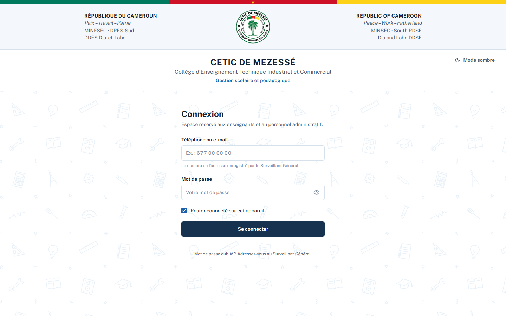
Figure 1 — Écran de connexion
1
Première connexion. Le Surveillant Général vous donne le mot de passe provisoire password. L'application vous demande aussitôt d'en choisir un nouveau, d'au moins 8 caractères.
2
Rester connecté. Cochée, la case garde la session sur l'appareil. Décochez-la sur un ordinateur partagé : la session s'efface à la fermeture du navigateur.
3
Mot de passe oublié. Demandez au Surveillant Général de le réinitialiser : il redevient password et vous en choisissez un nouveau à la connexion suivante.
Une session dure 12 heures. Au-delà, l'application vous demande de vous reconnecter.
2. Se repérer dans l'application
L'écran se compose d'un menu à gauche et d'une page centrale. Le menu n'affiche que ce que votre rôle permet de faire.
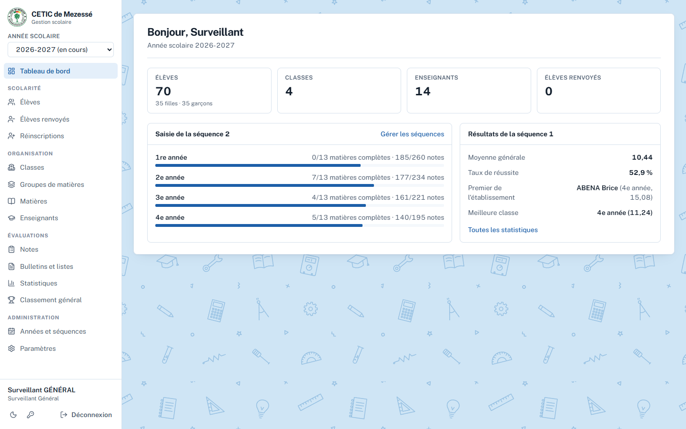
Figure 2 — Tableau de bord du Surveillant Général
Année scolaire (en haut du menu) : choisit l'année consultée. Les années passées restent consultables.
Tableau de bord : chiffres clés, avancement de la saisie de la séquence ouverte, résultats de la dernière séquence.
En bas du menu : passage en mode sombre, changement de mot de passe, déconnexion.
Sur un téléphone, le menu se replie : touchez l'icône à trois traits en haut à gauche pour l'ouvrir.
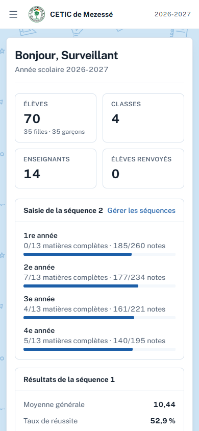
Figure 3 — Le site sur un téléphone
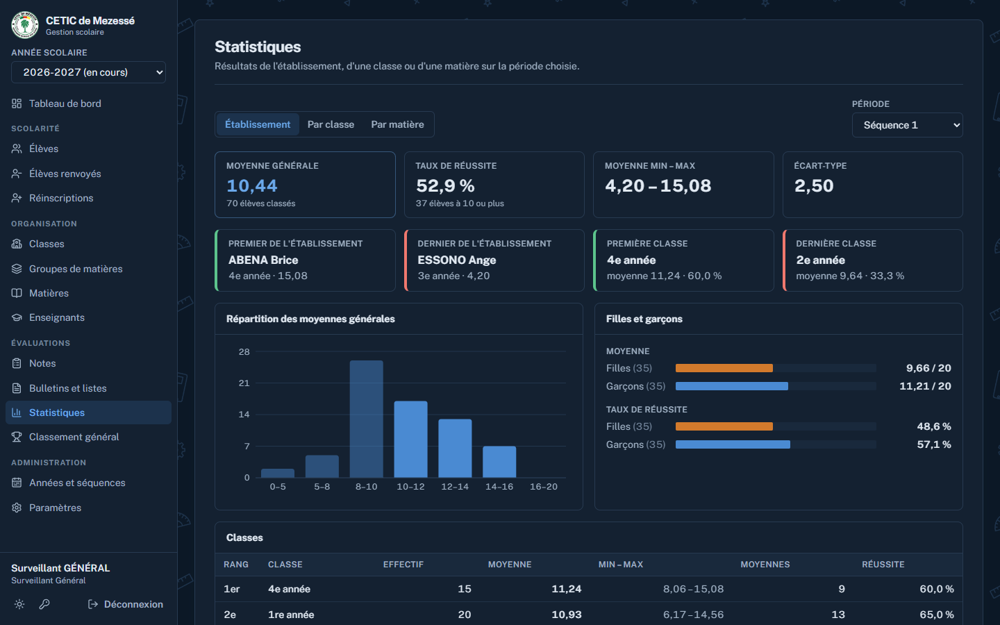
Figure 4 — Le mode sombre
3. Professeur : saisir et suivre ses notes
3.1 Le tableau de bord
Il liste vos matières, avec pour chaque séquence le nombre de notes saisies sur l'effectif de la classe : en gris rien n'est saisi, en orange la saisie est incomplète, en vert elle est complète.
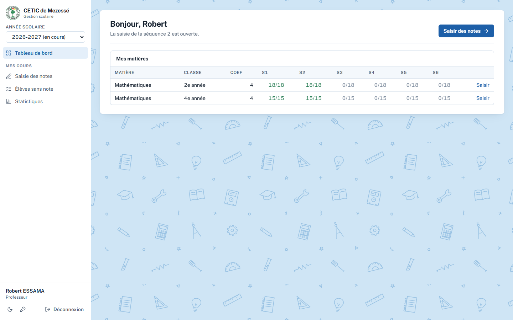
Figure 5 — Tableau de bord d'un professeur
3.2 Saisir les notes
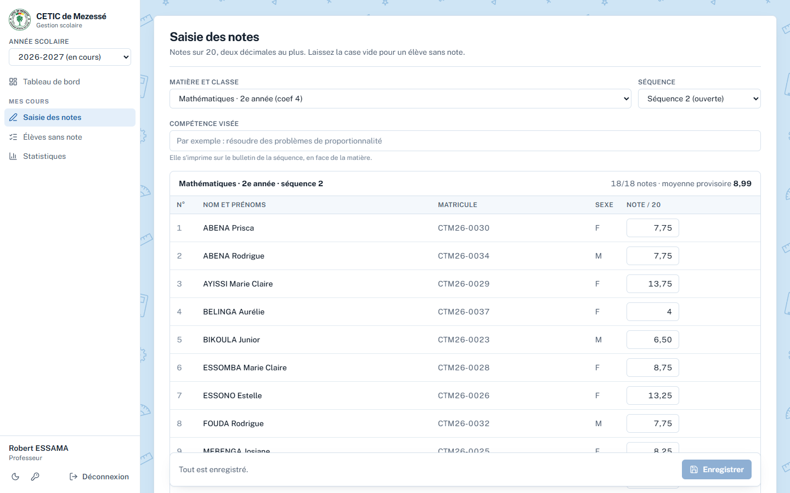
Figure 6 — Feuille de saisie d'une matière
1
Menu Saisie des notes. Choisissez la matière et classe, puis la séquence. Seule la séquence ouverte par le Surveillant Général est modifiable.
2
Renseignez la compétence visée : elle s'imprime sur le bulletin de la séquence, en face de la matière.
3
Tapez chaque note sur 20, avec deux décimales au plus. La virgule et le point sont acceptés : 12,5 ou 12.5. La touche Entrée ou la flèche du bas passe à l'élève suivant.
4
Cliquez sur Enregistrer dans la barre du bas. Elle indique le nombre de notes modifiées ; une note invalide est encadrée en rouge et bloque l'enregistrement.
Bon à savoir
Une case laissée vide signifie « pas encore de note ». Si l'élève n'a toujours pas de note au moment du bulletin, il a 0 dans cette matière.
Vider une case déjà remplie puis enregistrer efface la note.
Si vous quittez la page sans enregistrer, le navigateur vous prévient.
Une fois la séquence fermée, les notes passent en lecture seule. Pour une correction, demandez au Surveillant Général de la rouvrir.
3.3 Élèves sans note
Menu Élèves sans note : pour la séquence choisie, chaque matière affiche la liste des élèves qui n'ont pas encore de note, avec un lien pour compléter la saisie.
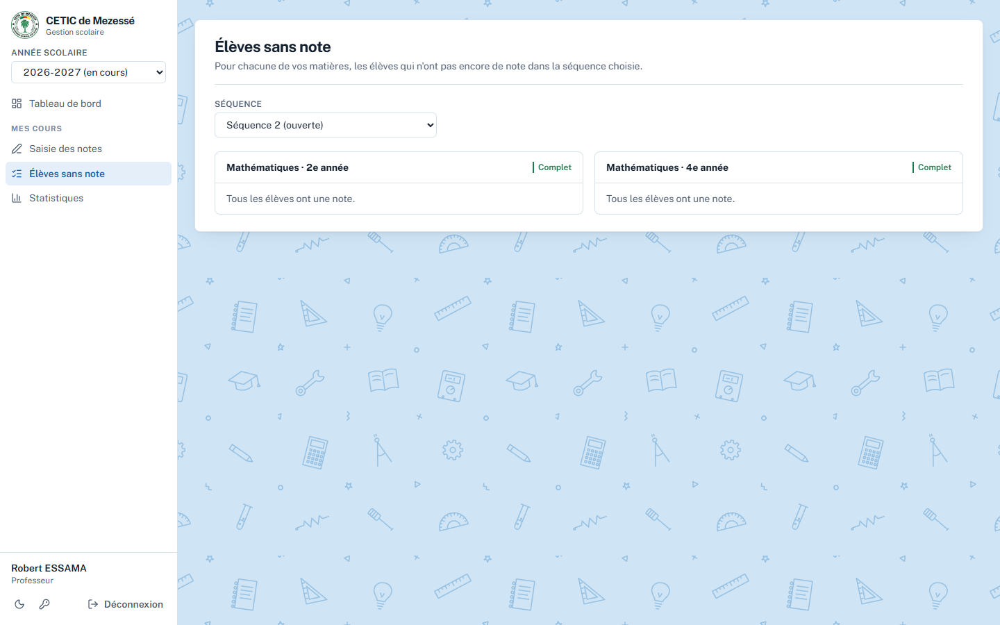
Figure 7 — Élèves sans note par matière
3.4 Statistiques de mes matières
Menu Statistiques : moyenne de la classe, taux de réussite, note la plus basse et la plus haute, écart-type, répartition des notes, évolution sur les six séquences, comparaison filles/garçons, grades obtenus et notes de chaque élève de la meilleure à la plus faible.
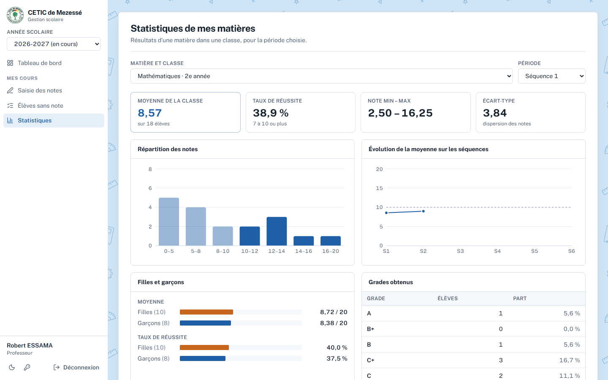
Figure 8 — Statistiques d'une matière
4. Surveillant Général : préparer l'année
En début d'année, suivez les étapes dans cet ordre : chaque étape s'appuie sur la précédente.
1
Paramètres : vérifiez les informations de l'établissement imprimées sur les documents, et les barèmes des grades et des cotes.
2
Années et séquences : créez l'année si elle n'existe pas. Vous pouvez reprendre l'organisation de l'année précédente (classes, groupes, matières, coefficients, enseignants).
3
Enseignants : créez les comptes des professeurs.
4
Classes, puis Groupes de matières, puis Matières de chaque classe, avec leur coefficient et leur professeur.
5
Élèves : saisie un par un, import d'un fichier Excel, ou Réinscriptions des élèves de l'année passée.
6
Années et séquences : ouvrez la saisie de la séquence 1.
4.1 Paramètres de l'établissement et barèmes
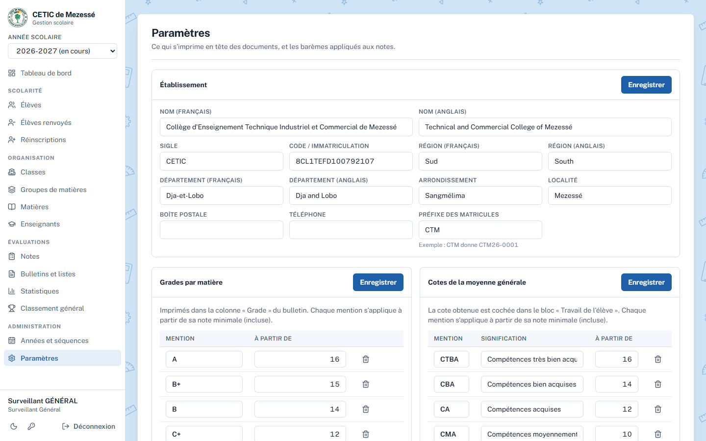
Figure 9 — Paramètres : établissement, grades et cotes
Chaque mention s'applique à partir de sa note minimale. Grades par défaut : A dès 16, B+ dès 15, B dès 14, C+ dès 12, C dès 10, D en dessous. Cotes par défaut : CTBA dès 16, CBA dès 14, CA dès 12, CMA dès 10, CNA en dessous. Un barème doit commencer à 0 pour que toute note reçoive une mention.
4.2 Enseignants
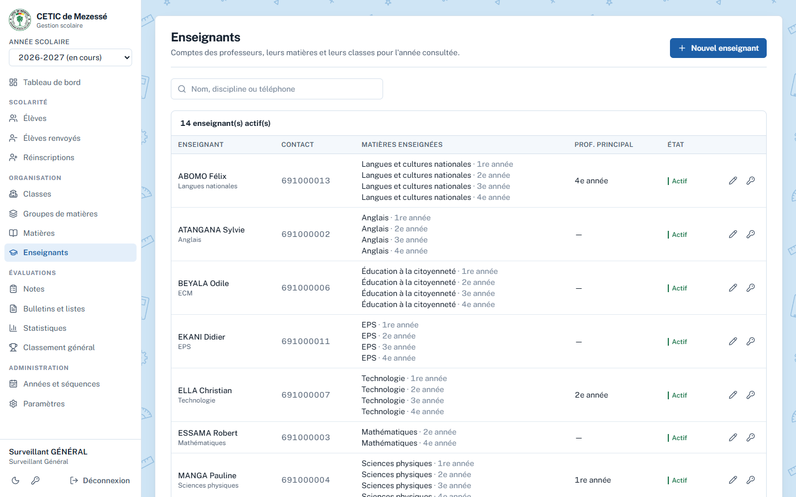
Figure 10 — Liste des enseignants
Nouvel enseignant : nom, prénom, téléphone (qui sert d'identifiant de connexion), e-mail facultatif, discipline. Le compte reçoit le mot de passe provisoire password. L'icône de clé réinitialise un mot de passe oublié. Décocher « Compte actif » bloque la connexion sans rien effacer.
4.3 Classes, groupes et matières
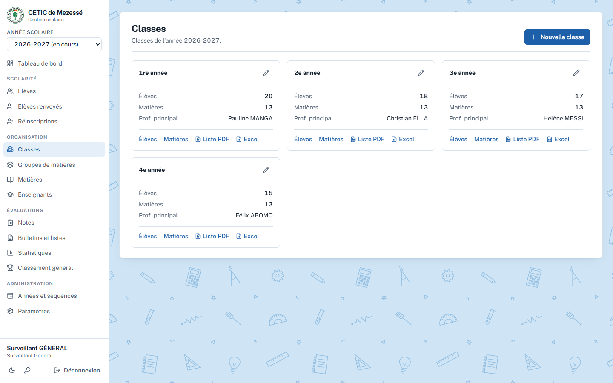
Figure 11 — Les classes de l'année
Classe : nom imprimé sur les documents (« 2e année »), niveau, spécialité, professeur principal.
Groupe de matières : structure le bulletin (sous-total et moyenne par groupe). Un même groupe peut être rattaché à plusieurs classes en les cochant.
Matière : toujours propre à une classe. Elle porte son groupe, son coefficient, son ordre sur le bulletin et son professeur. Supprimer une matière qui a des notes demande une seconde confirmation, car les notes sont effacées avec elle.
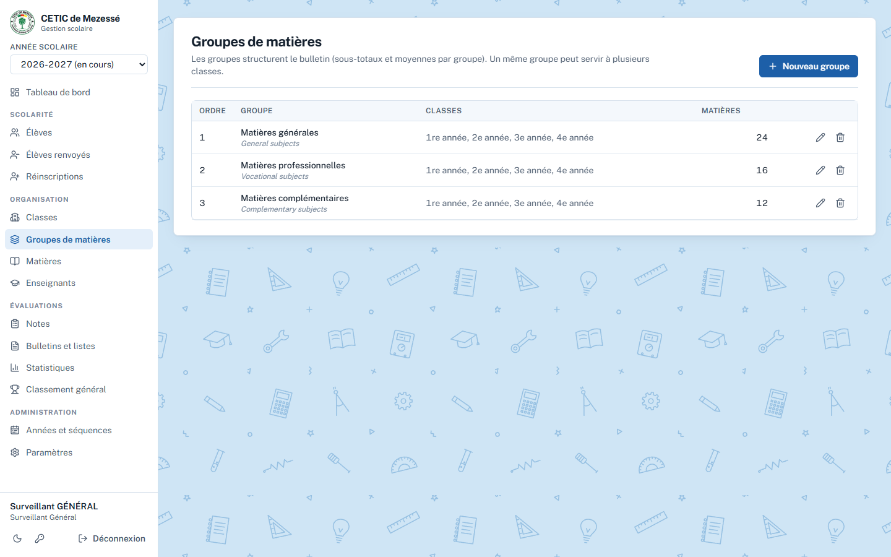
Figure 12 — Groupes de matières
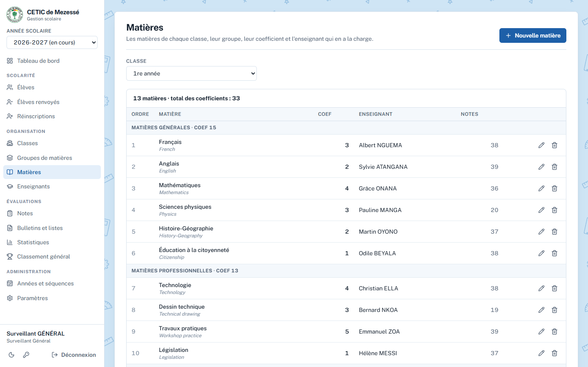
Figure 13 — Matières d'une classe
4.4 Élèves
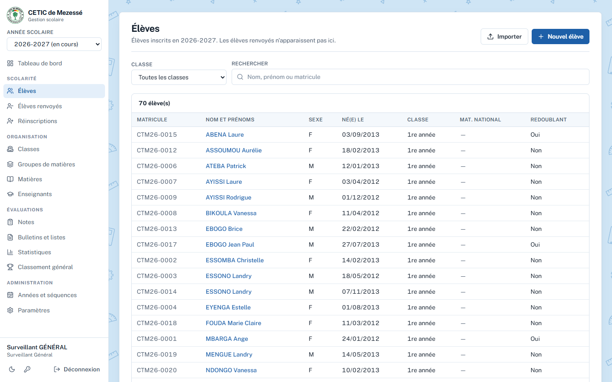
Figure 14 — Liste des élèves, filtrable par classe
Nouvel élève : identité, classe, redoublant, parent ou tuteur. Le matricule scolaire (par exemple CTM26-0007) est attribué automatiquement. Le matricule national se recopie depuis cartescolaire.cm quand il est connu.
Importer : téléchargez le modèle Excel, remplissez une ligne par élève, choisissez la classe et envoyez le fichier (Excel ou CSV). Si une seule ligne est invalide, rien n'est importé et les erreurs sont listées par numéro de ligne.
Fiche de l'élève (clic sur son nom) : photo (imprimée sur le bulletin), identité, bulletin individuel, parcours d'une année sur l'autre, historique des renvois.
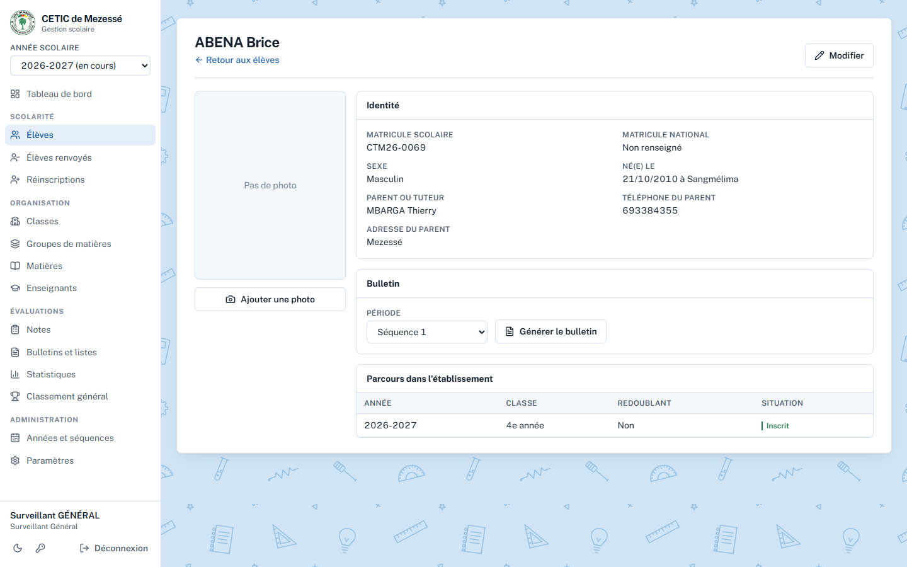
Figure 15 — Fiche d'un élève
5. Surveillant Général : suivre les séquences et éditer les documents
5.1 Ouvrir et fermer la saisie
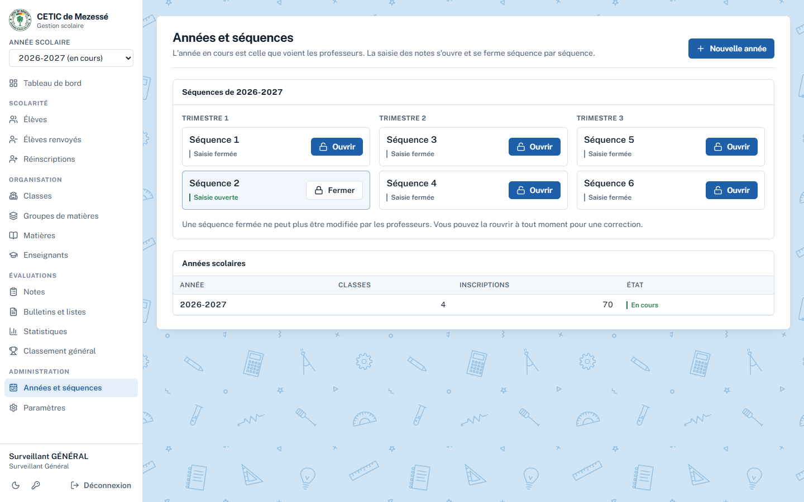
Figure 16 — Années et séquences
L'année compte six séquences réparties en trois trimestres. Le bouton Ouvrir autorise les professeurs à saisir ; Fermer fige les notes. Une séquence fermée peut être rouverte à tout moment pour une correction.
5.2 Consulter les notes
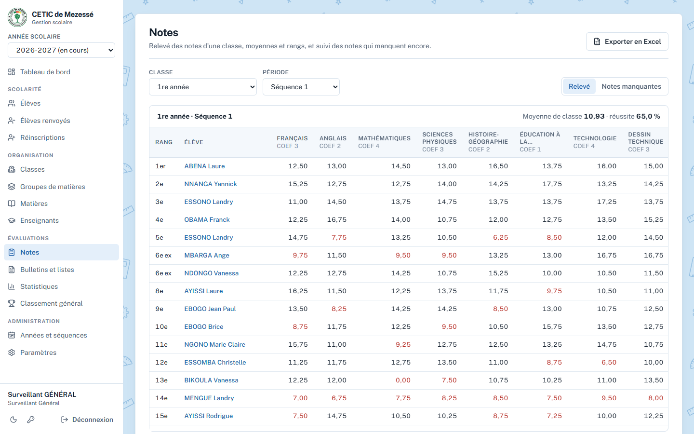
Figure 17 — Relevé de notes d'une classe
Menu Notes : choisissez la classe et la période (séquence, trimestre ou année). Le relevé affiche les notes de chaque élève, sa moyenne et son rang, classé du premier au dernier. L'onglet Notes manquantes montre, matière par matière, les élèves sans note et le professeur concerné. Exporter en Excel produit le relevé complet.
5.3 Bulletins et listes
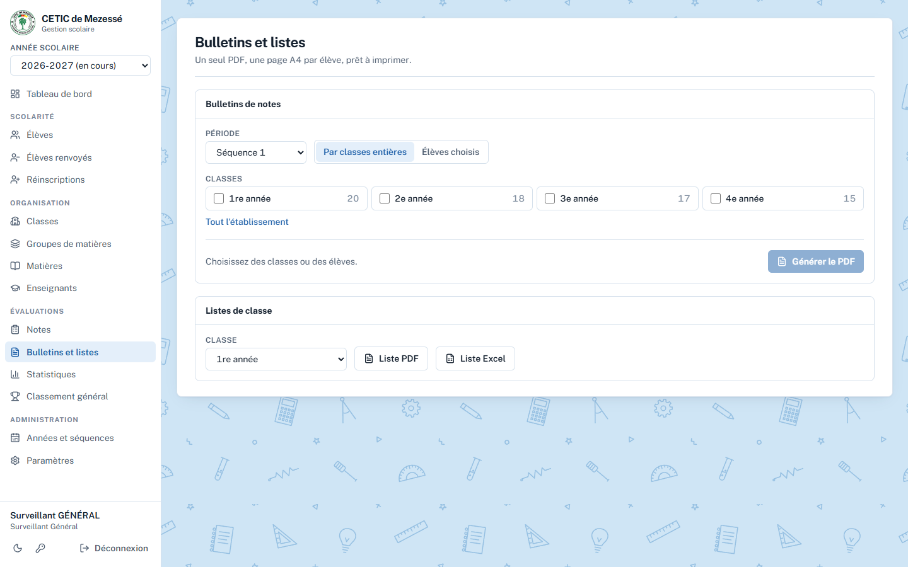
Figure 18 — Génération des bulletins et des listes
1
Choisissez la période : séquence, trimestre ou année complète.
2
Cochez une ou plusieurs classes entières (ou « Tout l'établissement »), ou passez à Élèves choisis pour quelques élèves d'une classe.
3
Générer le PDF : un seul fichier, une page A4 par élève, prêt à imprimer. L'emplacement du cachet et le bloc discipline restent vides, pour être remplis à la main.
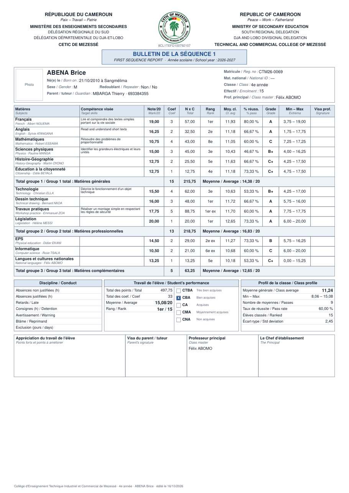
Figure 19 — Bulletin de séquence bilingue
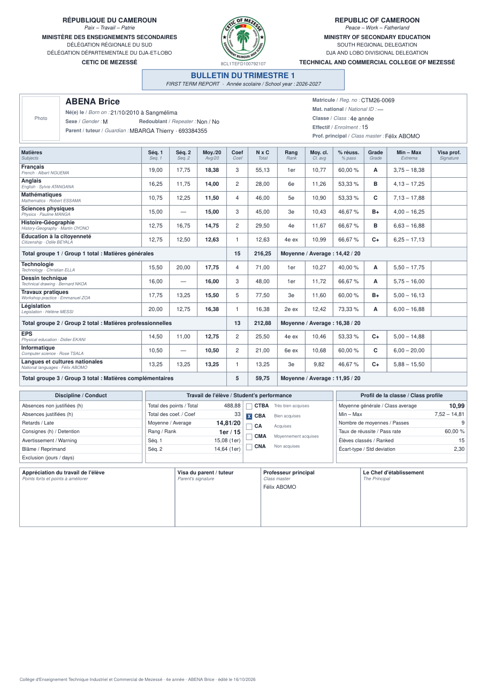
Figure 20 — Bulletin de trimestre (rappel des deux séquences)
La liste de classe s'obtient en PDF ou en Excel depuis la même page, depuis la carte d'une classe ou depuis la liste des élèves filtrée par classe.
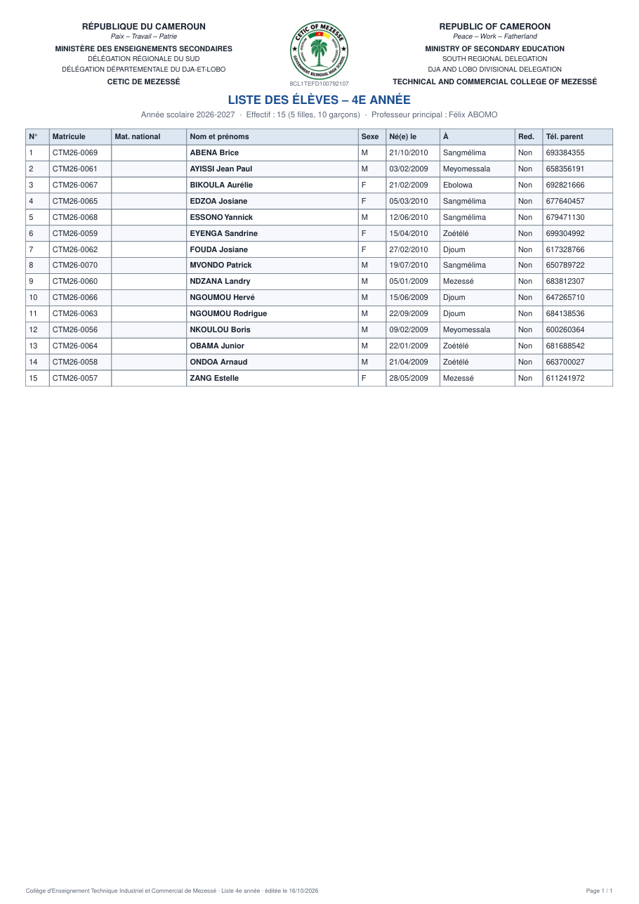
Figure 21 — Liste de classe en PDF
5.4 Nouvelle année et réinscriptions
Dans Années et séquences, Nouvelle année crée les six séquences et peut reprendre toute l'organisation d'une année précédente. Rendez-la active quand elle commence. Puis, dans Réinscriptions, choisissez l'année et la classe d'origine, cochez les élèves, la classe d'accueil, et indiquez s'ils redoublent. Les élèves gardent leur matricule et leur historique.
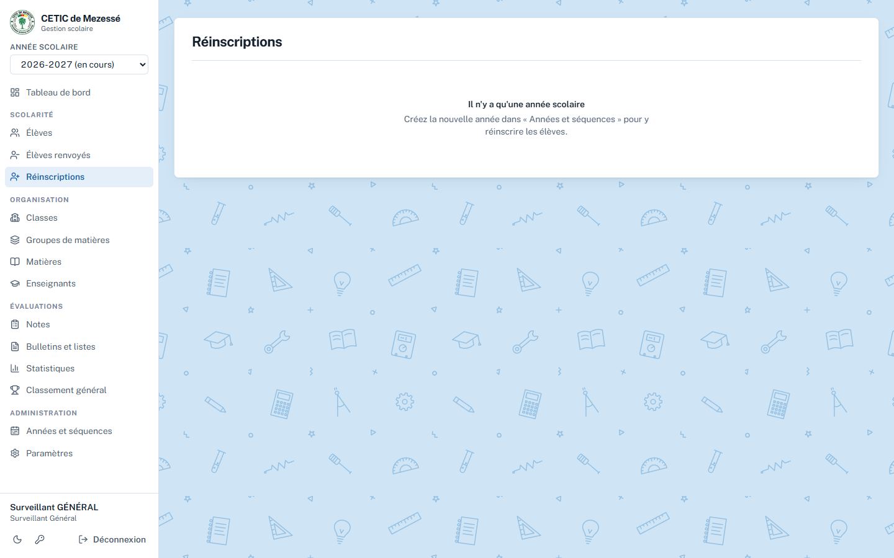
Figure 22 — Réinscription d'une année sur l'autre
6. Proviseur : consulter, renvoyer, réintégrer
Le Proviseur voit toutes les listes : élèves, enseignants, classes, matières, notes, statistiques et classement. Il peut aussi créer un élève et générer les bulletins.
6.1 Renvoyer un élève
1
Ouvrez la fiche de l'élève, puis Renvoyer.
2
Indiquez la date et le motif (obligatoire), puis confirmez.
L'élève sort de la liste principale, des classements, des statistiques et des bulletins. Ses notes sont conservées.
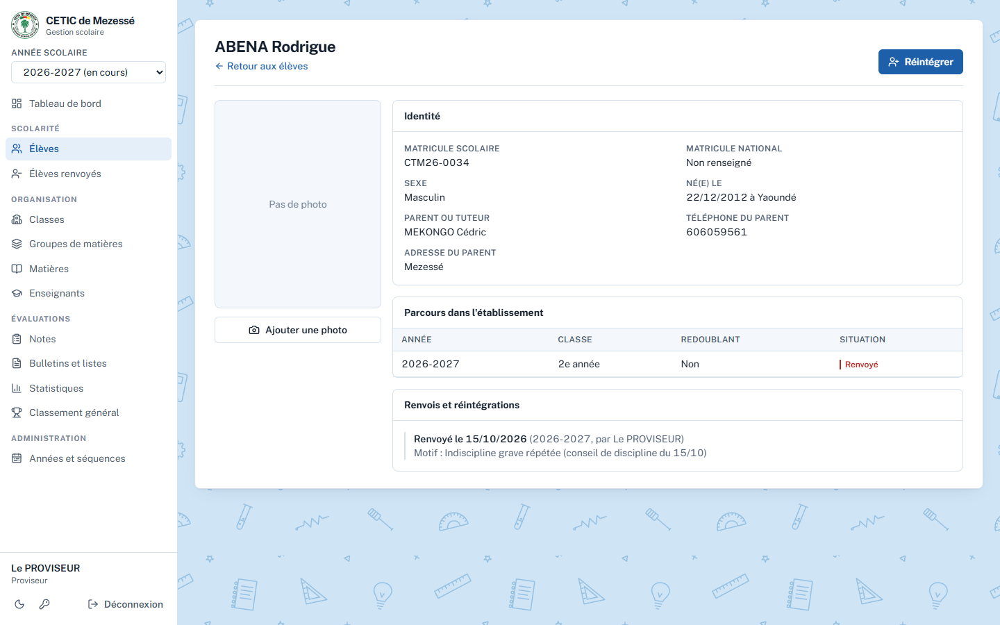
Figure 23 — Fiche d'un élève renvoyé, avec l'historique
6.2 Élèves renvoyés et réintégration
Menu Élèves renvoyés : liste de l'année avec la date, le motif et l'auteur de la décision. Le bouton Réintégrer rend à l'élève sa classe, ses notes et sa place dans les classements. Le Surveillant Général voit cette liste mais ne peut ni renvoyer ni réintégrer.
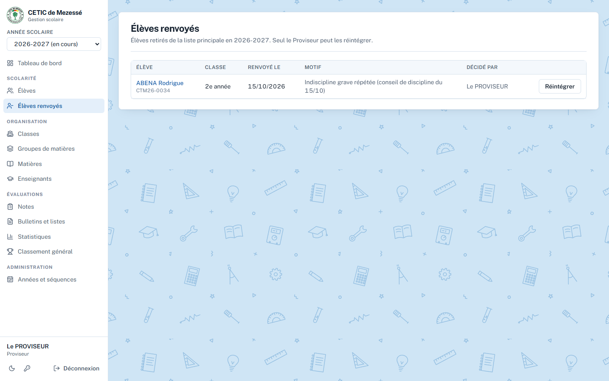
Figure 24 — Élèves renvoyés
7. Statistiques et classement
Menu Statistiques, trois onglets, pour la période choisie :
Établissement : moyenne générale, taux de réussite, premier et dernier élève de l'établissement, première et dernière classe, répartition des moyennes, filles et garçons, tableau des classes, moyenne par matière.
Par classe : les mêmes indicateurs pour une classe, avec l'évolution sur les séquences et trimestres et le détail par matière.
Par matière : la vue du professeur, pour n'importe quelle matière.
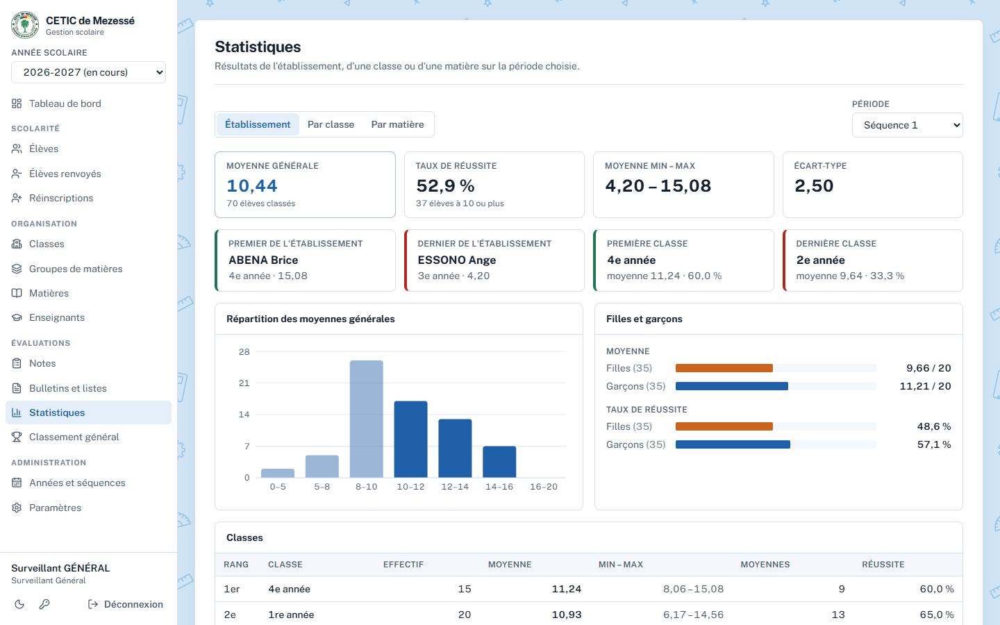
Figure 25 — Statistiques de l'établissement
Menu Classement général : tous les élèves de l'établissement classés par moyenne générale, avec leur rang dans leur classe. Le premier et le dernier sont signalés. Filtre par classe et recherche par nom.
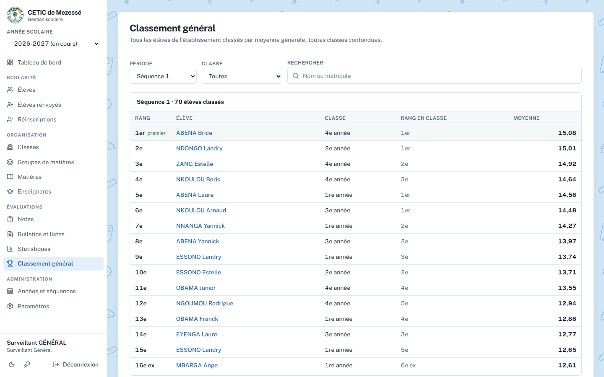
Figure 26 — Classement général
Comment lire les chiffres
Taux de réussite : part des élèves ayant 10/20 ou plus.
Écart-type : dispersion des notes. Plus il est grand, plus la classe est hétérogène.
Ex æquo : deux moyennes identiques au centième ont le même rang (« 6e ex »), et le rang suivant est sauté.
8. L'application mobile
L'application Android offre les mêmes fonctions que le site, selon votre rôle. Le fichier d'installation (APK) est fourni par l'administrateur. Sur le téléphone, autorisez l'installation depuis cette source si Android le demande.
8.1 Travailler sans réseau
Chaque page consultée est gardée sur le téléphone. Sans réseau, l'application affiche la dernière version connue, signalée par un bandeau orange « Hors connexion ».
Un professeur peut saisir des notes sans réseau : en enregistrant, les notes sont gardées sur le téléphone. Une icône en haut de l'écran indique le nombre de notes en attente.
Elles partent automatiquement au retour du réseau, ou à la demande avec Envoyer maintenant.
Si le serveur les refuse (par exemple parce que la séquence a été fermée entre-temps), la feuille est signalée en rouge dans la liste d'attente. Demandez la réouverture de la séquence, puis renvoyez.
8.2 Photos des élèves
Sur la fiche d'un élève, touchez le cadre de la photo : vous pouvez prendre la photo avec l'appareil ou la choisir dans la galerie.
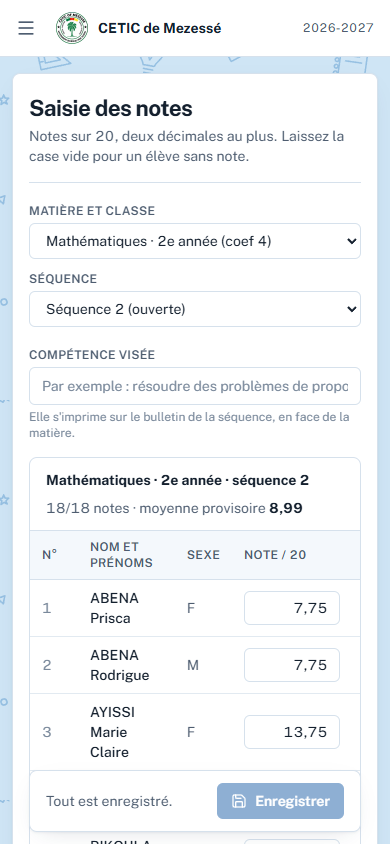
Figure 27 — La saisie des notes sur un écran de téléphone (version web)
9. Questions fréquentes
Situation
Que faire
« La saisie de la séquence est fermée »
Le Surveillant Général doit rouvrir la séquence (Années et séquences).
Une matière n'apparaît pas dans ma saisie
Elle ne vous est pas attribuée : le Surveillant Général choisit le professeur de chaque matière.
« Pas d'évaluation / No exam » sur un bulletin
Aucun élève de la classe n'a de note dans cette matière pour la période : elle est retirée du calcul pour tous.
Un élève a 0 dans une matière
Il n'a pas de note alors que d'autres élèves en ont : complétez la saisie avant d'imprimer.
L'import d'élèves est refusé
Corrigez les lignes indiquées (sexe M ou F, date JJ/MM/AAAA, colonnes dans l'ordre du modèle) et renvoyez le fichier.
Un élève renvoyé n'apparaît plus nulle part
C'est voulu : il figure dans « Élèves renvoyés », d'où le Proviseur peut le réintégrer.
« Session expirée »
Reconnectez-vous ; les notes en attente sur le mobile ne sont pas perdues.